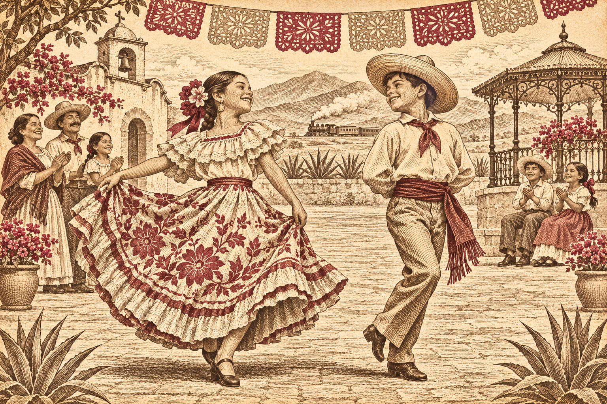
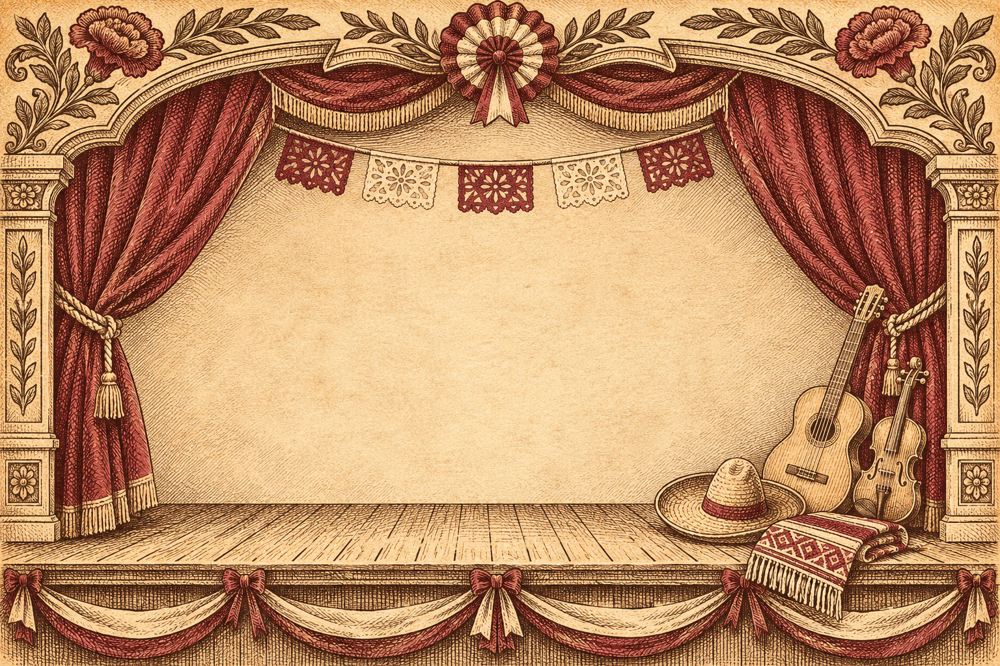

Nos encontramos en
Escuela Primaria
Rafael Ramírez
CCT 15DPR0852X · Turno matutino
Calle 6 y Calle Chalco, colonia El Barco.Nezahualcóyotl, Estado de México.
Un viaje hacia nuestras raíces.
Una celebración que nos reúne.
Nuestra historia está por encontrarnos…
Escuela Primaria
CCT 15DPR0852X
Nuestra historia vive aquí
Tu pase de abordar

Escuela Primaria · CCT 15DPR0852X
Nuestra historia vive aquí.
20 de noviembre · 8:30 a. m.
Te invitamos a conmemorar la Revolución Mexicana con el talento, la alegría y las tradiciones de nuestra comunidad escolar.

01 Celebrar también es recordar

El 20 de noviembre nos reúne para conmemorar la Revolución Mexicana y compartir el talento de nuestra comunidad.
Vive con nosotros una celebración de nuestras raíces, con la alegría que hace especial a nuestra escuela.
¡Tú también eres parte de esta historia!02 Tu pase de abordar
Reserva el día en tu calendario.
Inicio: 8:30 a. m.
03 El escenario de nuestra escuela

Un recorrido por nuestra historia con personajes, bailables, corridos, tablas rítmicas y teatro.
La marcha de Zacatecas
Apertura del programa
Popurrí revolucionario «Coronelas»
Carabina 30-30
Remix revolucionario
«La Adelita», «La Cucaracha» y «Sinaloense»
Sube y baja · Polka
La Rielera
Adelita DJ
Cierre de las participaciones
Historia que recordamos. Tradiciones que compartimos.
04 El encuentro se acerca
Cuenta regresiva hasta el 20 de noviembre de 2026, a las 8:30 a. m.
Rafael Ramírez
El tiempo nos reúne
Faltan para el viaje
— segundos
Hora de la Ciudad de México